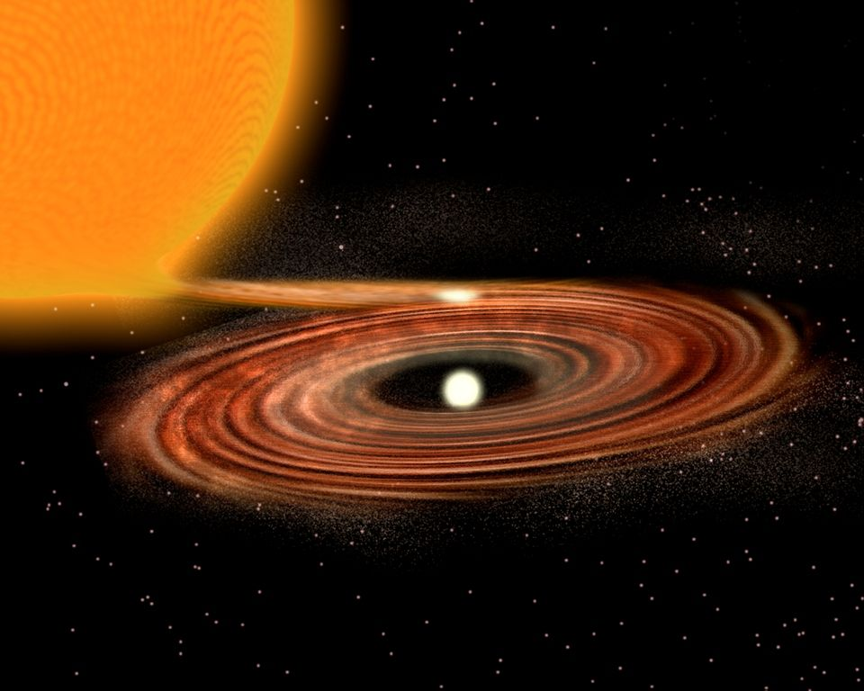

DIBS

Accretion Disk
In a binary star system, if the two stars are close enough, matter from one star (the donor) can be transfered onto the other star (the accretor) and mass accretion can happen. The matter that is transfered from one star to the other does not follow a straight line, but because the system has angular momentum, matter spirals in while forming a disk around the accretor before plunging onto its surface, this is called an accretion disk (Carroll & Ostlie 2006). Frictional forces heat up the matterial spinning in the disk and radiate mostly in X-rays.
The Luminosity of an accretion disk is given by L = \frac{G M \dot{M}}{R} , where G is the gravitational constant, M is the mass of the central object, \dot{M} is the accretion rate onto the central object, and R is the radius of the central object (Frank, King & Raine 2002).
The Luminosity of an accretion disk is given by L = \frac{G M \dot{M}}{R} , where G is the gravitational constant, M is the mass of the central object, \dot{M} is the accretion rate onto the central object, and R is the radius of the central object (Frank, King & Raine 2002).

Artist’s representation of an accretion disk. Credit: P. Marenfeld and NOAO/AURA/NSF